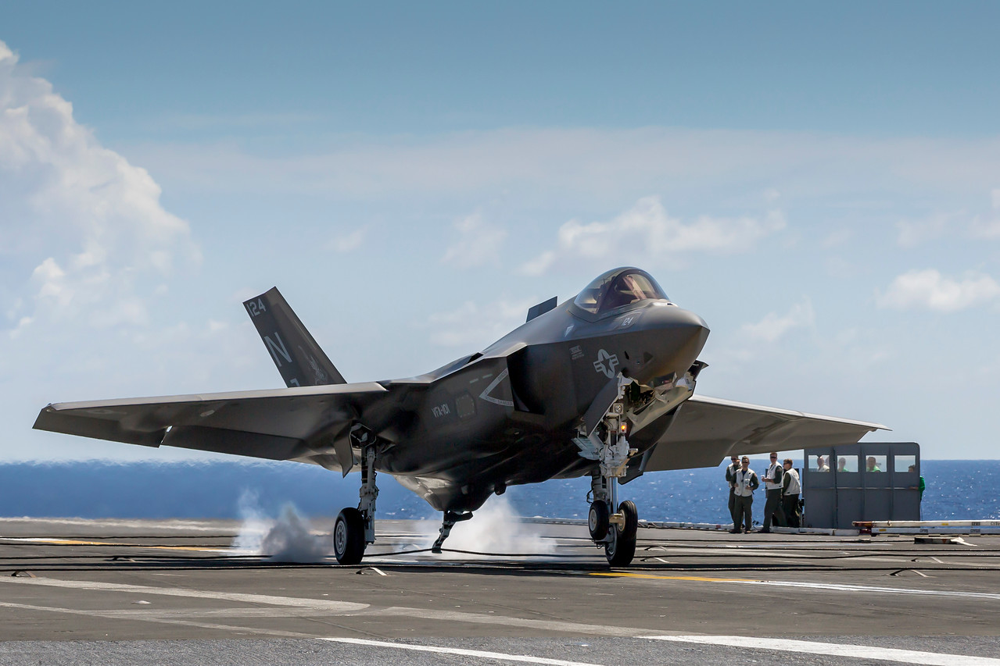

F-35 Lightning II
F-35 InfoThe F-35 is a 5th generation stealth mutlirole aircraft built for the battlefield of the future.
The F-35 strengthens national security, enhances global partnerships and powers economic growth. It is the most lethal, survivable and connected fighter aircraft in the world, giving pilots an advantage against any adversary and enabling them to execute their mission and come home safe. The F-35 family includes three variants — all single-seat jets. The F-35A conventional takeoff and landing variant, the F-35B short takeoff/vertical landing variant, and the F-35C carrier variant. All three variants have similar performance characteristics and the exact same advanced avionics. The variation between models allows military forces to achieve service-specific mission capability, while still taking advantage of the economies of scale that result from the parts and processes that are common to all three variants.
F-35A
Designed to operate from conventional runways and is the most common variant. The United States Air Force and the majority of F-35 international allied customers operate the F-35A.

F-35B
Can land vertically like a helicopter and take-off in very short distances. This allows it to operate from austere, short-field bases and a range of air-capable ships. The F-35B is operated by the United States Marine Corps, the United Kingdom, and the Italian Air Force.

F-35C
The Navy’s first stealth fighter and the world’s only 5th Generation, long-range stealth strike fighter designed and built explicitly for aircraft carrier operations. The F-35C is operated exclusively by the Department of the Navy.
